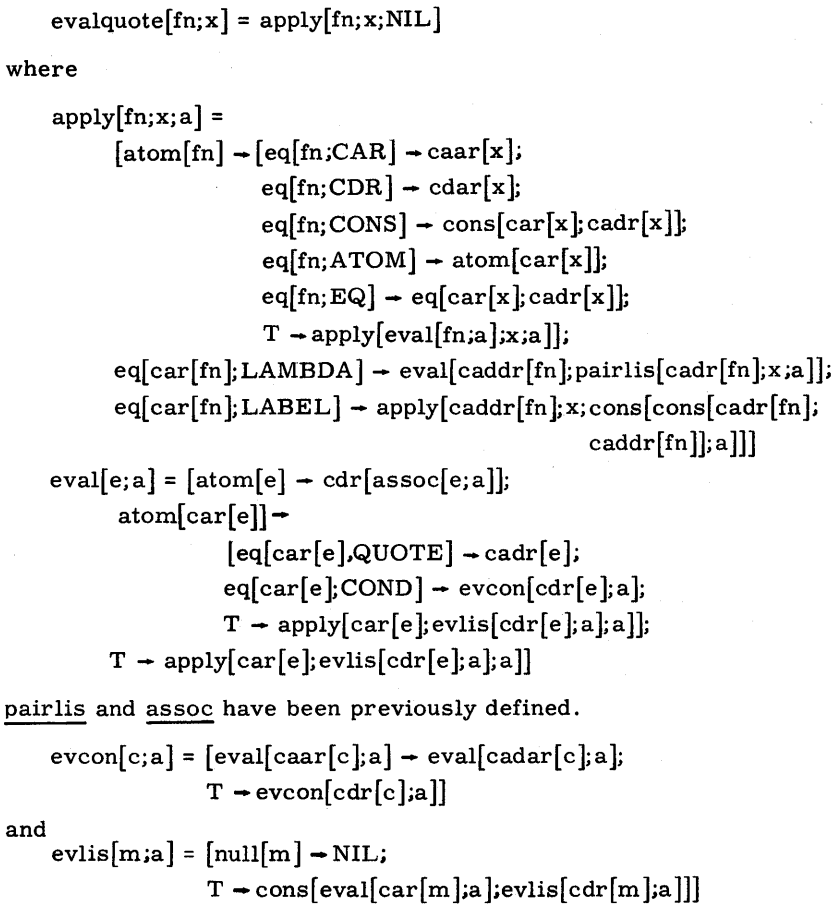
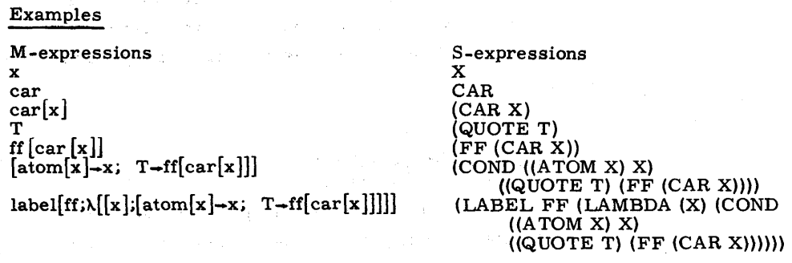

Maxwell’s Equations of Software
On December 27, 2004 ACM Queue published an interview with Alan Kay, the creator of Smalltalk. In this interview, he pronounced the famous words:
That was the big revelation to me when I was in graduate school—when I finally understood that the half page of code on the bottom of page 13 of the Lisp 1.5 manual was Lisp in itself. These were "Maxwell’s Equations of Software!" This is the whole world of programming in a few lines that I can put my hand over.
– Alan Kay
So, what is on the bottom of page 13 of the LISP 1.5 Programmers Manual?

This small piece of code is a universal LISP function. In other
words, evalquote can compute the value of any given function applied
to its arguments when given a description of that function. A LISP
interpreter written in LISP itself that fits in a flashcard!
The syntax might look quite different to what we expect from LISP. The reason is the usage of M-expressions instead of S-expressions. The Lisp 1.5 programmers manual explains why on page 1:
The second important part of the LISP language is the source language itself which specifies in what way the S-expressions are to be processed. This consists of recursive functions of S-expressions. Since the notation for the writing of recursive functions of S-expressions is itself outside the S-expression notation, it will be called the meta language. These expressions will therefore be called M-expressions.
The manual also explains how to translate an M-expression to its equivalent S-expression:

As you can imagine, I could not resist to write my own implementation. The following is the complete Racket implementation (evalquote.rkt):
1: #lang racket 2: 3: (define (atom e) 4: (not (cons? e))) 5: 6: (define (pairlis x y a) 7: (cond [(null? x) a] 8: [else (cons (cons (car x) (car y)) (pairlis (cdr x) (cdr y) a))])) 9: 10: (define (evcon c a) 11: (cond [(eval (caar c) a) (eval (cadar c) a)] 12: [else (evcon (cdr c) a)])) 13: 14: (define (evlis m a) 15: (cond [(null? m) null] 16: [else (cons (eval (car m) a) (evlis (cdr m) a))])) 17: 18: (define (eval e a) 19: (cond [(atom e) (cdr (assoc e a))] 20: [(atom (car e)) (cond [(eq? (car e) 'QUOTE) (cadr e)] 21: [(eq? (car e) 'COND) (evcon (cdr e) a)] 22: [else (apply (car e) (evlis (cdr e) a) a)])] 23: [else (apply (car e) (evlis (cdr e) a) a)])) 24: 25: (define (apply fn x a) 26: (cond [(atom fn) (cond [(eq? fn 'CAR) (caar x)] 27: [(eq? fn 'CDR) (cdar x)] 28: [(eq? fn 'CONS) (cons (car x) (cadr x))] 29: [(eq? fn 'ATOM) (atom (car x))] 30: [(eq? fn 'EQ) (eq? (car x) (cadr x))] 31: [else (apply (eval fn a) x a)])] 32: [(eq? (car fn) 'LAMBDA) (eval (caddr fn) (pairlis (cadr fn) x a))] 33: [(eq? (car fn) 'LABEL) (apply (caddr fn) x (cons (cons (cadr fn) (caddr fn)) a))])) 34: 35: (define (evalquote fn x) (apply fn x null))
And the following is the same Racket code after commenting every single bit (evalquote-commented.rkt):
1: #lang racket 2: 3: ;; Distinction between forms and functions. 4: ;; 5: ;; It is usual to use the word "function" imprecisely, and to apply it 6: ;; to forms such as y*2+x. Because we shall compute with expressions 7: ;; that stand for functions, we need a notation that expresses the 8: ;; distinction between functions and forms. The notation that we 9: ;; shall use is the lambda notation of Alonzo Church. 10: ;; 11: ;; Let f be an expression that stands for a function of two integer 12: ;; variables. It should make sense to write f[3;4] and to be able to 13: ;; determine the value of this expression. For example, sum[3;4]=7. 14: ;; The expression y*2+x does not meet this requirement. It is not at 15: ;; all clear whether the value of y*2+x[3;4] is 10 or 11. An 16: ;; expression such as y*2+x will be called a form rather than a 17: ;; function. A form can be converted to a function by specifying the 18: ;; correspondence between the variables in the form and the arguments 19: ;; of the desired function. 20: 21: ;; cons returns #t if e is an atomic symbol, #f otherwise. 22: (define (atom e) 23: (not (cons? e))) 24: 25: ;; pairlis gives the list of pairs of corresponding elements of the 26: ;; lists x and y, and appends this to the list a. The resultant list 27: ;; of pairs, which is like a table with two columns, is called an 28: ;; association list. 29: (define (pairlis x y a) 30: (cond [(null? x) a] 31: [else (cons (cons (car x) (car y)) (pairlis (cdr x) (cdr y) a))])) 32: 33: ;; evcon handles the COND form. It evaluates the list of 34: ;; propositional terms c in order, and chooses the form following the 35: ;; first true predicate. a is an association list of names and 36: ;; definitions. 37: (define (evcon c a) 38: ;; Given the conditional expression 39: ;; (COND ((ATOM (QUOTE A)) (QUOTE B)) ((QUOTE T) (QUOTE C))) 40: ;; c is 41: ;; '(((ATOM (QUOTE A)) (QUOTE B)) ((QUOTE T) (QUOTE C))) 42: ;; Thus, 43: ;; (caar c) returns '(ATOM (QUOTE A)) 44: ;; (cadar c) returns '(QUOTE B) 45: ;; (cdr c) returns '(((QUOTE T) (QUOTE C))) 46: (cond [(eval (caar c) a) (eval (cadar c) a)] 47: [else (evcon (cdr c) a)])) 48: 49: ;; evlis evaluates the list of arguments m of a function. a is an 50: ;; association list of names and definitions. 51: (define (evlis m a) 52: ;; Given the function call 53: ;; (CONS (QUOTE A) (QUOTE B)) 54: ;; m is 55: ;; '((QUOTE B) (QUOTE C)) 56: ;; Thus, 57: ;; (car m) returns '(QUOTE B) 58: ;; (cdr m) returns '((QUOTE C)) 59: (cond [(null? m) null] 60: [else (cons (eval (car m) a) (evlis (cdr m) a))])) 61: 62: ;; eval handles a form. a is an association list of names and 63: ;; definitions. 64: (define (eval e a) 65: (cond 66: ;; If e is an atomic, then it must be a variable, and its value is 67: ;; looked up on the association list. 68: [(atom e) (cdr (assoc e a))] 69: ;; If e is a list that begins with an atomic symbol, then it can be 70: ;; a quote expressions, a conditional expression or a function 71: ;; call. 72: [(atom (car e)) 73: (cond 74: ;; If car of the form is QUOTE, then it is a constant. 75: ;; Given the expression 76: ;; (QUOTE A) 77: ;; Then, 78: ;; (cadr e) returns 'A 79: [(eq? (car e) 'QUOTE) (cadr e)] 80: ;; If car of the form is COND, then it is a conditional 81: ;; expression, and evcon handles it. 82: ;; Given the expression 83: ;; (COND ((ATOM (QUOTE A)) (QUOTE B)) ((QUOTE T) (QUOTE C))) 84: ;; Then, 85: ;; (cdr e) returns '(((ATOM (QUOTE A)) (QUOTE B)) ((QUOTE T) (QUOTE C))) 86: [(eq? (car e) 'COND) (evcon (cdr e) a)] 87: ;; Otherwise, the form must be a function followed by its 88: ;; arguments. The arguments are then evaluated, and the function 89: ;; is given to apply. 90: [else (apply (car e) (evlis (cdr e) a) a)])] 91: [else (apply (car e) (evlis (cdr e) a) a)])) 92: 93: ;; apply handles a function and its arguments. 94: ;; 95: ;; fn is a function. If it is an atomic symbol, there are two 96: ;; possibilities: 97: ;; 98: ;; - fn is an elementary function: CAR, CDR, CONS, ATOM or EQ. 99: ;; - fn is an atom. 100: ;; 101: ;; In each case, the appropriate function is applied to the arguments. 102: ;; 103: ;; x is a list of S-expressions used as arguments. a is an 104: ;; association list of names and definitions. 105: (define (apply fn x a) 106: (cond 107: ;; fn is an atomic symbol. 108: [(atom fn) 109: (cond 110: ;; fn is the elementary function CAR. 111: ;; Given the arguments 112: ;; '((A B C)) 113: ;; Then, 114: ;; (caar x) returns 'A 115: [(eq? fn 'CAR) (caar x)] 116: ;; fn is the elementary function CDR. 117: ;; Given the arguments 118: ;; '((A B C)) 119: ;; Then, 120: ;; (cdar x) returns '(B C) 121: [(eq? fn 'CDR) (cdar x)] 122: ;; fn is the elementary function CONS. 123: ;; Given the arguments 124: ;; '(A B) 125: ;; Then, 126: ;; (car x) returns 'A 127: ;; (cadr x) returns 'B 128: [(eq? fn 'CONS) (cons (car x) (cadr x))] 129: ;; fn is the elementary function ATOM. 130: ;; Given the arguments 131: ;; '((A . B)) 132: ;; Then, 133: ;; (car x) returns '(A . B) 134: [(eq? fn 'ATOM) (atom (car x))] 135: ;; fn is the elementary function EQ. 136: ;; Given the arguments 137: ;; '(A B) 138: ;; Then, 139: ;; (car x) returns 'A 140: ;; (cadr x) returns 'B 141: [(eq? fn 'EQ) (eq? (car x) (cadr x))] 142: ;; Otherwise, fn must be looked up in the association list. 143: [else (apply (eval fn a) x a)])] 144: 145: ;; If fn begins with LAMBDA, then the arguments are paired with the 146: ;; bound variables and the form is given to eval to evaluate. 147: ;; Given the expression 148: ;; (LAMBDA (X) (CDR X)) 149: ;; Then, 150: ;; (caddr fn) returns '(CDR X) 151: ;; (cadr fn) returns '(X) 152: [(eq? (car fn) 'LAMBDA) (eval (caddr fn) (pairlis (cadr fn) x a))] 153: 154: ;; If fn begins with LABEL, then the function name and definition are 155: ;; added to the association list, and the inside function is evaluated 156: ;; by apply. 157: ;; Given the expresion 158: ;; (LABEL FF (LAMBDA (X) (FF (CONS (QUOTE A) X)))) 159: ;; Then, 160: ;; (caddr fn) returns '(LAMBDA (X) (FF (CONS (QUOTE A) X))) 161: ;; (cadr fn) returns 'FF 162: [(eq? (car fn) 'LABEL) (apply (caddr fn) x (cons (cons (cadr fn) (caddr fn)) a))])) 163: 164: ;; evalquote is a universal LISP function. In other words, it can 165: ;; compute the value of any given function applied to its arguments 166: ;; when given a description of that function. 167: ;; 168: ;; fn is the function to be applied represented as a S-expression. x 169: ;; is a list of S-expressions used as arguments. 170: (define (evalquote fn x) (apply fn x null))
So, let's run it!
racket@maxwell-equations/evalquote> (evalquote 'CAR '((A B C))) 'A racket@maxwell-equations/evalquote> (evalquote '(LAMBDA (X) (CDR X)) '((A B C))) '(B C) racket@maxwell-equations/evalquote> (evalquote '(LAMBDA (X) (CONS (QUOTE FIRST) (CDR X))) '((A B C))) '(FIRST B C)
The code is so short and simple that extending it is trivial. For example, the following two lines patch allows to call procedures passed from the environment (evalquote-proc.rkt):
--- evalquote.rkt 2024-06-11 16:56:44.247229249 +0200 +++ evalquote-proc.rkt 2024-06-11 17:14:09.789565784 +0200 @@ -1,5 +1,7 @@ #lang racket +(require (only-in racket/base [apply rapply])) + (define (atom e) (not (cons? e))) @@ -28,6 +30,7 @@ [(eq? fn 'CONS) (cons (car x) (cadr x))] [(eq? fn 'ATOM) (atom (car x))] [(eq? fn 'EQ) (eq? (car x) (cadr x))] + [(and (assoc fn a) (procedure? (cdr (assoc fn a)))) (rapply (cdr (assoc fn a)) x)] [else (apply (eval fn a) x a)])] [(eq? (car fn) 'LAMBDA) (eval (caddr fn) (pairlis (cadr fn) x a))] [(eq? (car fn) 'LABEL) (apply (caddr fn) x (cons (cons (cadr fn) (caddr fn)) a))]))
We can add, for instance, the * operator into the context of the
LISP interpreter:
racket@maxwell-equations/evalquote-proc> (apply '(LAMBDA (X Y) (* X Y)) '(2 21) `((* . ,*))) 42
If you like this topic, then stop everything you are doing and go watch the wonderful talk "The Most Beautiful Program Ever Written" by William Byrd.